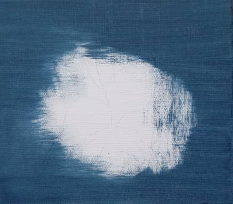
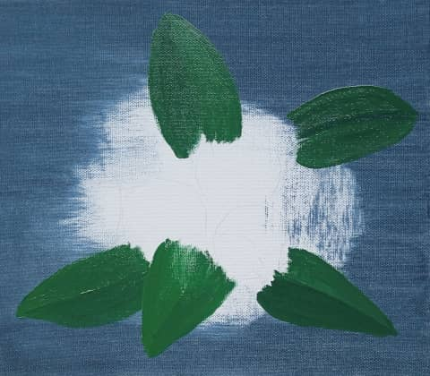
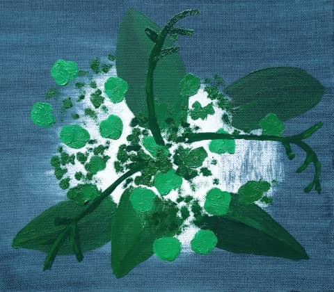
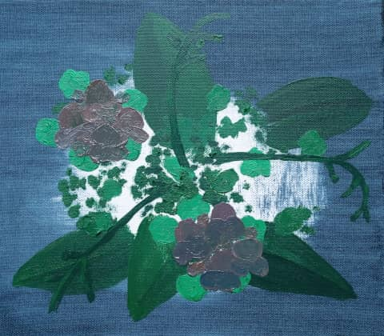
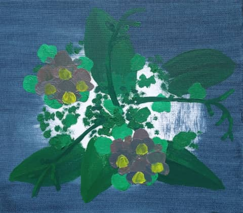
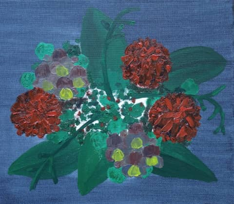
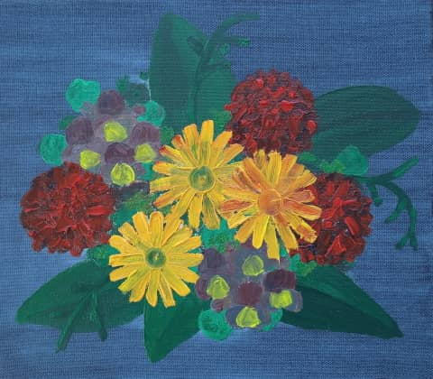
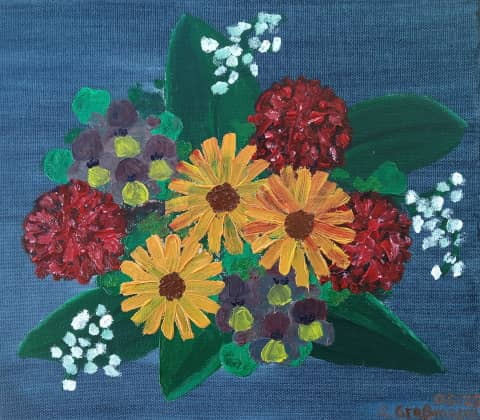
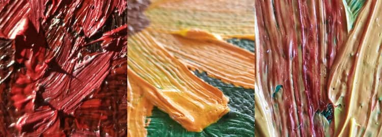

Manches soll nicht gleich in der Timeline versinken …
Auf dieser Website ist Raum für das, wofür meinem Mastodon-Account @charakterziffer zu kurzlebig ist. Mein Blog ist als Plus zu meinen Posts gedacht, eben „@cz+“. // Die letzten drei Artikel:
Menschen stiegen ein, stiegen aus, erfüllten den Raum mit diffusen Murmeln. Auf einem der hinteren Sitze öffnete Alex ihren mattschwarzen Geigenkasten. Vor dem Fenster spielte ein Junge Kästchenhüpfen, zusammen mit anderen Kindern, die wegen seiner Springkünste begeistert klatschten. Ein Hund bellte.
Das Taxi kam einen Augenblick nach dem Bus am Konzerthaus an. Alex hatte die Satteltasche an sich genommen. Mit einem beherzten Wurf platzierte Jonas den Stein auf dem Feld Nº 6. Das Publikum klatschte. Die Geigen hatten bereits zu summen begonnen, während Maria ihre Noten aufschlug. Sie hatte noch etwas Zeit; die Triangel kam im ersten Satz nicht vor. Als der Gesang einsetzte, erhob sich der Uniformierte. Er nahm sein Rad und wartete, bis der Bus zum Stehen kam. Bevor der Postbote wieder auf das Fahrrad stieg, zog er den Kopfhörer aus dem Ohr und legte ihn zu den Briefen in die Satteltasche.
Der Junge blickte kurz auf, als der Uniformierte vorbeifuhr, dann nahm er den Stein aus dem vorigen Feld. Es musste sich um Alex handelt, vermutete Frau Mohnfeld. Ganz sicher war sie sich bei den Zwillingen aber nie. Sie schob den Vorhang wieder vor, denn die Sonne blinzelte durch die Schleierwolken. In diesem Augenblick bellte erneut ihr Hund und kurz darauf klapperte der Briefschlitz.
Seinem Gefühl nach hatte die Generalprobe nur eine Viertelstunde gedauert. Jonas knabberte eine Mohrrübe, während er im Foyer auf den Bus wartete. Ob seine Tante die Konzertkarten rechtzeitig bekommen hatte? Nach einem Blick auf die Standuhr warf Jonas die zweite Mohrrübe in seine Satteltasche und eilte auf die Straße. Das graue Licht des Morgens brach sich im feinen Nieselregen. An der Bushaltestelle warteten Alex und Maria, über das Konzert redend, als die Linie 14 um das Justizgebäude bog. Menschen stiegen ein, stiegen aus, erfüllten den Raum mit diffusen Murmeln. Auf einem der hinteren Sitze öffnete Alex ihren mattschwarzen Geigenkasten. Vor dem Fenster spielte ein Junge Kästchenhüpfen, zusammen mit anderen Kindern, die wegen seiner Springkünste begeistert klatschten. Ein Hund bellte.
Das Taxi kam einen Augenblick nach dem Bus am Konzerthaus an. Alex hatte die Satteltasche an sich genommen. Mit einem beherzten Wurf platzierte Jonas den Stein auf dem Feld Nº 6. Das Publikum klatschte. Die Geigen hatten bereits zu summen begonnen, während Maria ihre Noten aufschlug. Sie hatte noch etwas Zeit; die Triangel kam im ersten Satz nicht vor.
Diese Kurzgeschichte ist inspiriert von den früheren Zwischensequenzen bei arte-Programmhinweisen(arte Idents 2011). Daran fasziniert haben mich die mehrdeutige Handlung und die Idee eines abstrakten Gebildes, das immer wieder andere Blickwinkel bietet.
Schon 2023 habe ich mir ein Tuben-Set mit Ölfarbe gekauft, dazu fünf Leinwände. Viel Erfahrung beim Malen mit Öl habe ich nicht und traue mich nur langsam ran. Bislang habe ich ein abstraktes, graphisches Spektrum gemalt und mich an einem groben Porträt versucht – das aber gründlich misslungen ist (beide bei meinen Fensterbildern zu sehen). Nun also mein dritter Anlauf in Sachen Ölmalerei.
Diesmal habe ein eher einfaches Motiv gewählt, nämlich ein Arrangement verschiedener Blumen – ohne reale Vorlage, sondern im Kopf so zusammengestellt und grob mit Bleistift skizziert. Inspiriert dazu hat mich unter anderem die fünfteilige Arte-Serie „Im Rausch der Blumen“, die verschiedene Florist:innen bei ihren Projekten begleitet.
Das Schwierigste: Geduld
Wenn ich mit Wasserfarbe male, geht es verhältnismäßig schnell, bis eine Farbfläche getrocknet ist. Nach spätestens 20 Minuten kann ich mit einer neuen Farbe weitermachen, ohne dass verschiedene Schichten sich mischen oder Formen ineinander laufen. Beim Malen mit Öl brauche ich deutlich mehr Geduld.








Ich habe das Motiv in einzelne Elemente aufgeteilt, die ich über Tage hinweg nach und nach ergänzen konnte. Das ging beim Blumenbouquet recht gut:
Preußisch Blauer Hintergrund, darauf erstmal fünf dunkelgrüne Blätter. Nun weitere hellgrüne Blättchen und dunkle Stängel aus der Mitte heraus. Dann zwei Gruppen mit grau-blau-rosa Nebenblumen, die ein bisschen an Stiefmütterchen erinnern sollen. Diese haben im nächsten Schritt jeweils ein gelbes Kronblatt bekommen, anschließend kamen drei rote Blumenballen auf die Leinwand. Das noch leere Zentrum füllen orange-gelbe Korbblütler, deren Mitte ich im letzten Schritt braun ausgemalt habe. Dazu weiße Tupfen wie Schleierkraut, dunkle Akzente und ein paar letzte Details. Die animierte Bilderfolge zeigt die verschiedenen Phasen, zwischen denen das Bild immer wieder trocknen musste. (Den Code für die animierte Überblendung habe ich mir übrigens von Dan Klammer abgeschaut.)
Je nachdem, wie dick man die Ölfarbe aufträgt, ist sie sogar nach zwei Tagen noch zu feucht, um etwas darüber malen zu können. Zum Beispiel wollte ich in meinem Blumenbild weiße Highlights in die roten Blütenbälle setzen. Pustekuchen: Das Rot war noch nicht getrocknet und so haben sich eher rosafarbene Flecken ergeben. Nicht meine Absicht, aber akzeptabel.
Leuchtende Farben fortgemischt
In Schule und Studium hatte ich gelernt, welche Grundfarben man kombinieren muss, um einen bestimmten Farbton zu erreichen – mit Ölfarben ist das Mischen aber gar nicht so einfach. Zum Beispiel vermisse ich bei meinen Öltuben ein leuchtendes Violett, das ich gern für die kleineren Nebenblumen eingesetzt hätte. In der Theorie erhalte ich Violett, wenn ich Rot mit ein wenig Blau mische …
Wenn ich in der Praxis aber zwei Ölfarbkleckse verrühre, verlieren sie sehr schnell ihre Leuchtkraft. Der entstandene Farbton ist matt und fast immer dunkler, als ich ihn mir vorgestellt habe. Anfangs hatte ich noch den Fehler gemacht, dann wieder etwas Weiß hinzuzufügen. Dadurch wird das Ergebnis zwar heller, dabei aber noch grauer als zuvor. Ob ich beim Mischen etwas falsch mache? Vermutlich ist es einfach so, dass gemischte Ölfarben nicht so schön leuchten wie reine Farbtöne direkt aus der Tube.
Pastoser Farbauftrag
Was ich bei Ölfarbe wirklich mag, ist ihre cremige Konsistenz. Man kann sie dick wie eine Paste auftragen und hat zusätzlich zur Farbe noch eine Oberflächenstruktur. Mit etwas Geschick lässt sich das Motiv stellenweise modellieren.

Durch die Dickflüssigkeit gibt es auch die Möglichkeit, eine Stelle komplett deckend zu übermalen. Sehr praktisch, weil der Hintergrund tatsächlich wieder hinter dem Motiv verschwindet. Bei Wasserfarbe muss man mit der Hintergrundfarbe überall die Bereiche aussparen, wo später noch das Motiv hinkommt. Meistens male ich dann von vorne nach hinten und setze den Hintergrund am Schluss in die Lücken, die das Motiv übrig gelassen hat.
Ein weiterer, schöner Effekt ist ein Pinselstrich mit zwei Farben gleichzeitig, die sich untereinander nicht vollständig mischen. Das ergibt eine interessante Linie mit mehreren Schattierungen. Beim Malen mit Wasserfarbe darf man dafür die Pigmente nur mit sehr wenig Wasser anrühren; mit Ölfarbe geht das deutlich einfacher.
Kürzlich habe ich über Acrylfarbe gelesen, dass sie ähnlich cremig wie Ölfarbe sein soll, dabei aber schneller trocknet. Damit könnte ich auch mal herumexperimentieren …
Als einzigen Social-Media-Dienst nutze ich Mastodon. Es ist eine Plattform vor allem für sehr kurze Texte, vergleichbar mit X (früher Twitter). Die meisten anderen Plattformen haben nämlich eine Eigenschaft, die mir missfällt: einen Algorithmus.
Prinzipiell ist sind Algorithmen sehr praktisch. Es sind „Rezepte“ zum Lösen einer Aufgabe. Mit einem Algorithmus findet man schnell ein ziemlich gutes Ergebnis für ein Problem, dessen exakte Lösung viel Rechenaufwand erfordern würde. Ein Beispiel aus der Mathematik ist das Heron-Verfahren, um Wurzeln näherungsweise zu berechnen.
Wenn bei Social Media von Algorithmen die Rede ist, geht es in der Regel darum, wie Beiträge im Feed sortiert werden und welche Posts ich überhaupt zu Gesicht bekomme. Ein Beispiel ist TikTok mit seiner For-You-Funktion. Dort stellt mir ein Algorithmus eine nicht endende Flut von Filmchen zusammen. Was ich sehe hängt davon ab, wie lang ich mir vorangehende Videos anschaue, was ich like, erneut abspiele, kommentiere … kurz: Jede meiner Interaktionen beeinflusst, was als nächstes abgespielt wird. Dazu kommen bei TikTok noch Faktoren wie mein Standort, allgemeine Trends und weiteres. Wie der Algorithmus genau funktioniert, verrät die Betreiberfirma ByteDance nicht.
Bleib doch noch ein Weilchen
Das Ziel von Algorithmen ist für jedes soziale Netzwerk dasselbe: Vorgeblich soll ich dadurch die Inhalte sehen, die relevant für mich sind und mich besonders interessieren. Letztendlich geht es für die Plattform aber vor allem darum, mich bei der Stange halten. Nur wenn ich möglichst lange durch den Feed scrolle, kann mir Werbung ausgespielt werden. Je mehr Zeit ich auf der Plattform verbringe, desto mehr Geld verdient der Betreiber mit meiner Aufmerksamkeit.
Ein Effekt eines Sortier-Algorithmus ist, dass ich keine breite Themenauswahl mit verschiedenen Perspektiven mehr sehe, sondern nur noch die Themen, die mich „packen“: Niedliche Meerschweinchen-Videos, News von meinem Lieblingsverein oder innovative Nudelrezepte. Es müssen auch nicht unbedingt Inhalte sein, die meiner Meinung entsprechen – im Gegenteil: Posts, die mich aufregen, sind perfekt geeignet, mich zu einer Reaktion zu reizen (engagement, „mich einbringen“): Carbonara-Soße mit Knoblauch? Sacrilego!
Abgleiten ins Extreme
Weil empörende oder knallige Inhalte besonders stark zur Interaktion anregen, erhöhen Algorithmen in der Regel deren Verbreitung. So erreichen Posts, die Widerspruch oder Bekräftigung provozieren, deutlich mehr Nutzer:innen als jene Inhalte, die eher nachdenklich oder ausgewogen sind. Aufrührende Fakes und Kampagnen haben mehr Durchschlagskraft als deren Korrekturen und Einordnungen.
Dass du vor allem reißerische Inhalte in deinen Feed sortiert bekommst, ist aber nur eine Seite des Problems. Den Leuten, die dir folgen, geht es nämlich genauso. Auch sie bekommen vorgefiltert, was emotional zündet – also nicht unbedingt das, was du so schreibst. Zwar finden deine Follower entschieden, dass du interessante Sachen machst und bewusst bei dir auf „Folgen“/„Abonnieren“ geklickt … und trotzdem sehen sie gar nicht alles, was du veröffentlichst. Außer, du unterwirfst dich dem Algorithmus, formulierst deine Posts kontroverser, provozierst Reaktionen, zündelst mit.
Um vom Algorithmus nicht herabgestuft zu werden und unwissentlich weniger Reichweite zu bekommen (Fachbegriff: „Shadowban“), haben sich Tricksereien wie Algospeak entwickelt. Nutzer:innen vermeiden bestimmte Schlüsselworte und drücken sich anders aus: Statt „Sex“ oder „Depression“ schreiben sie „Seggs“ oder „Depressi0n“.
In einigen Fällen wird ein ganzes Konzept durch eine Metapher ersetzt, um die Reichweitendrosselung durch Algorithmen zu verhindern. Ein aktuelles Beispiel aus USA ist der Hashtag #winterboots („Winterstiefel“). Dabei geht es allerdings nicht um Schuhe, sondern um Tipps für Migranten gegen die Einwanderungs- und Zollbehörde. Deren Abkürzung ICE entspricht dem englischen Word für Eis, wogegen Winterstiefel recht nützlich sind. Sehr lesenswert zum Thema Algospeak finde ich einen kurzen Artikel von Netzpolitik.org mit weiteren Beispielen.
Besser keine Algorithmen?
Und nun? Sollen wir uns in den Sozialen Medien in immer absurdere Metaphern versteigen, für mehr Reichweite gepfeffert formulieren oder dieses ganze Social Media einfach lassen? Mögliche Alternativen wären vorhanden: E-Mail-Newsletter, RSS-Feeds, Lesezeichen für gute Websites oder Podcasts.
Wie anfangs erwähnt gibt es Netzwerke, in denen die Beiträge chronologisch erscheinen und nicht von Algorithmen gefiltert oder verstärkt werden. Neben Mastodon gehört dazu auch die Foto-Plattform Flickr, die bewusst auf Algorithmen verzichtet (engl.); dazu weitere, kleine Netzwerke (z. B. Vero, Ello, MeWe, TapeReal – mir alle eher unbekannt).
Andererseits hat die rein zeitliche Sortierung ohne Algorithmen einen großen Nachteil: Leute, die viel veröffentlichen, sind in der Timeline dann deutlich präsenter als jemand mit wenigen, aber vielleicht interessanteren Posts – Masse schlägt Qualität. Dagegen können bestimmte Filter helfen (um belanglose Schlagworte auszublenden) oder den Vielschreibern bewusst zu entfolgen, wenn sie die Timeline zu sehr dominieren.
Oder bessere Algorithmen?
Beiträge meiner Interessen hervorheben, radikale Inhalte zurückstufen, mich vor einer überfordernden Masse bewahren – Algorithmen sind nicht per se „böse“, sondern können durchaus nützlich sein. Entscheidend ist, welche Schwerpunkte ein Unternehmen mit seiner Sortier-Mechanik setzen will: Die Aufmerksamkeit des Nutzer:innen möglichst lange in Beschlag nehmen? Interaktion provozieren und dabei eventuell radikalisieren?
Um vor Manipulation geschützt zu sein und selbst entscheiden zu können, ob ein Algorithmus fair arbeitet, braucht es vor allem eines: Transparenz. Unternehmen müssen offen legen, wie ihre Sortierung in etwa funktioniert: Welche Faktoren werden wie stark gewichtet, welches Verhalten und welche Inhalte vermindern die Reichweite, warum erscheint dieser oder jener Beitrag in meinem Feed?
Durch Transparenz ist vielleicht nicht zu 100 Prozent nachvollziehbar, warum dir der Algorithmus einen ganz bestimmten Beitrag vor die Nase setzt – schließlich sind Algorithmen oft so komplex, dass selbst ihre Entwickler:innen am Ende nicht mehr genau wissen, warum eine Entscheidung so und nicht anders getroffen wird. Immerhin bekommst du aber eine gute Ahnung, womit du es zu tun hast.
Ein Beispiel für transparente Algorithmen liefert das ZDF. Es erklärt, wie Empfehlungen in der Mediathek zustande kommen, welche Faktoren eine Rolle spielen und begründet sogar, warum diese dem Auftrag eines öffentlich-rechtlichen Senders entsprechen (z. B. damit auch wenig genutzte Beiträge sichtbarer werden). In diesem Fall kann eine Personalisierung durch Algorithmen den Zuschauer:innen einen tatsächlichen Mehrwert bieten.
Abschließend als Lesetipp noch ein BBC-Artikel über Algorithmen (engl.) – mit einem Überblick, wie sich Social-Media-Algorithmen entwickelt haben, wie sie den öffentlichen Diskurs beeinflussen und ob sie durch Vorfilterung die Meinungsfreiheit beeinträchtigen könnten.
Das Wort kombiniert Persönlichkeit (Charakter) mit Sachlichem (Ziffer). Zusammengesetzt ergibt sich ein Synonym für Mediävalziffer, eine Zahlenvariante mit Ober- und Unterlängen.
Schriftarten dieses Blogs
Wenn dein Browser eingebettete Schriften (WOFF2) unterstützt, dann liest du die Fließtexte hier in der Source Sans Pro von Paul D. Hunt, erschienen 2012 bei Adobe.
Die Überschriften sind aus der czSlab gesetzt, die ich für dieses Blog gestaltet habe. Sie orientiert sich an Yanones viel ausgefeilterer Antithesis von 2014.
§ 1 Externe Links · Dieses Blog verlinkt auf Websites Dritter. Zum Zeitpunkt der erstmaligen Verlinkung waren dort keine Rechtsverstöße ersichtlich. Da ich keinen Einfluss auf fremde Websites habe, kann ich für deren Inhalte und Gestaltung keine Haftung übernehmen. Sollte ich von Rechtsverstößen erfahren, entferne ich die Verlinkung unverzüglich. Eine ständige Kontrolle der externen Links ist ohne konkrete Hinweise aber nicht zumutbar.
§ 2 Datenschutzerklärung · Mir ist der Schutz deiner Daten sehr wichtig. Deshalb verzichte ich auf Cookies, vermeide möglichst Dienste von Drittanbietern und erhebe so wenige Daten wie es geht. Diese Website kann ohne die Angabe persönlicher Daten genutzt werden.
Die einzige Ausnahme sind Kommentare. Wenn du einen meiner Texte kommentierst, bekomme ich die eingegebenen Daten und eine Zeitangabe per (prinzipiell unsicherer) E-Mail zugestellt. Falls dein Kommentar sachlich zur Diskussion beiträgt, ergänze ich ihn öffentlich sichtbar unter dem entsprechenden Artikel. Dabei sind sämtliche Angaben freiwillig (Name, Website, Mailadresse, Kommentar) – auch anonyme Kommentare sind möglich.
§ 3 Widerspruch gegen Direktwerbung · Die Verwendung meiner Kontaktdaten zur gewerblichen Werbung ist ausdrücklich nicht erwünscht; ich widerspreche hiermit jeder kommerziellen Nutzung und Weitergabe meiner Daten (gemäß § 21 DSGVO). // Über private Fanpost freue ich mich allerdings sehr und antworte darauf mit großem Vergnügen!
 @charak
@charak